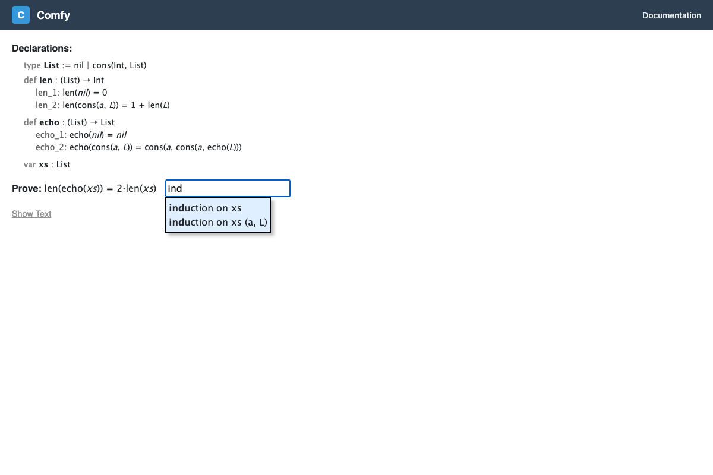

Proof Methods
After clicking Start on the setup screen, you enter the proof view. The goal is displayed with a text input below it where you choose a proof method. There are three methods:
calculationinduction on <variable>cases on <inequality>
Type the method name and press Enter to confirm. The input supports Tab-completion — press Tab to autocomplete the method name, including available induction variables.

Calculation
Type calculation and press Enter. This is the most common
method and is used when you can directly transform the left side and right
side of the goal until they meet in the middle.
See Calculation Proofs for full details on how calculation chains work.
calculation for straightforward algebraic proofs, for
base cases in induction, and wherever you don't need structural induction or
case analysis.
Induction
Type induction on varName and press Enter. This
starts a proof by structural induction on the named
variable.
Requirements
- The variable must be declared with
varin the declarations. - The variable's type must be an inductively defined type (not
Int). - The variable must appear in the goal formula.
Optional: Naming Induction Arguments
You can optionally provide names for the constructor arguments:
induction on xs (a, L)
This names the arguments used in the inductive case (e.g., for
cons(a, L)). If omitted, default names are chosen
automatically.
What Happens
The proof splits into one case per constructor of the
induction variable's type. For a List with constructors
nil and cons, you get:

Base Case
For constructors with no recursive arguments (like nil), the
goal is the original formula with the induction variable replaced by the
constructor. No induction hypotheses are available.
Inductive Case
For constructors with recursive arguments (like cons(a, L)),
the goal has the variable replaced by the constructor applied to fresh
variables. You also get induction hypotheses — the
original goal formula applied to each recursive sub-part — as
additional numbered facts.
For example, proving P(xs) by induction on xs : List:
| Case | Goal | Induction Hypotheses |
|---|---|---|
nil |
P(nil) |
(none) |
cons(a, L) |
P(cons(a, L)) |
P(L) — as a numbered fact |
Each case requires its own sub-proof. You choose a method for each case
(usually calculation) and prove it independently.
Tree Example
For a Tree with leaf and node(L, R):
| Case | Goal | Induction Hypotheses |
|---|---|---|
leaf |
P(leaf) |
(none) |
node(L, R) |
P(node(L, R)) |
P(L) and P(R) — two numbered facts |
Proof by Cases
Type cases on inequality and press Enter. This starts
a proof by cases that splits on whether an inequality
holds.
Requirements
- The condition must be an inequality using
<or<=. - You cannot use
=as a cases condition.
Example
cases on a < 0This creates two sub-proofs:
| Case | Additional Known Fact |
|---|---|
Case a < 0 |
a < 0 |
Case 0 <= a |
0 <= a (the negation) |

The negation of a < b is b <= a, and
the negation of a <= b is b < a.
Each case gets the condition (or its negation) as an additional numbered fact, which can be cited in proof rules. Each case requires its own sub-proof with its own proof method.
Nesting Proof Methods
Sub-proofs can use any proof method. This means you can nest:
- Induction with calculation cases
- Induction with cases-on analysis inside an inductive case
- Cases with calculation in each branch
A common pattern is: induction at the top level, with cases on inside the inductive step (to handle conditional function definitions), and calculation at the leaves.